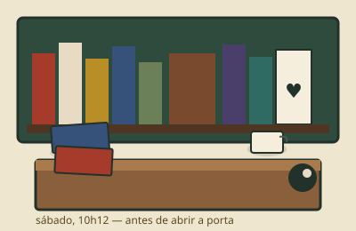

2009Garagem aberta
Duas caixas, um varal de gibis e café passado.
Em 2009 a Cida se aposentou da escola, juntou os livros que tinha em dobro e abriu a garagem num sábado. Vendeu sete, trocou onze e passou café pra rua inteira. Na semana seguinte a rua inteira apareceu com caixa de papelão.
O aluguel da lojinha saiu de uma vaquinha de vizinhos — cada um deu um pouco e ganhou crédito em livro. Até hoje o caderno dessa vaquinha fica emoldurado atrás do balcão, com os nomes escritos à mão.
O que a gente acredita não mudou: preço escrito à caneta, estado descrito sem enfeite, troca valendo mais que dinheiro e ninguém sai sem pelo menos um dedo de prosa.
Duas caixas, um varal de gibis e café passado.
Mudança pra loja da esquina. O Fred, gato da vizinha, adotou a vitrine.
Lista de segunda-feira: a gente caça o livro que você não acha em lugar nenhum.
Contagem do caderno. Cada um com etiqueta e nome de quem levou.

Cida — precifica, lembra do gosto de cada freguês e passa o café.
Raimundo — conserta lombada, caça raridade e conta história comprida.
Fred — gato, dorme na vitrine e julga suas escolhas em silêncio.
A gente troca melhor do que compra: na troca, cada livro vale 20% a mais em crédito. Comprando, pagamos de R$ 2 a R$ 15 por exemplar, dependendo do estado e da procura. Traz numa caixa que avaliamos na hora.
Três dias corridos, com seu nome na etiqueta. Passou disso, volta pra estante — mas a gente avisa antes pelo telefone ou e-mail que você deixou.
Traz de volta em 7 dias que trocamos por outro ou devolvemos o valor em crédito. Página faltando a gente confere antes, mas se passar, a casa assume.
Sim, é a lista de procurados de segunda. Deixa título, autor e seu contato no contato ou no livro de reservas. Quando aparece, você tem prioridade.